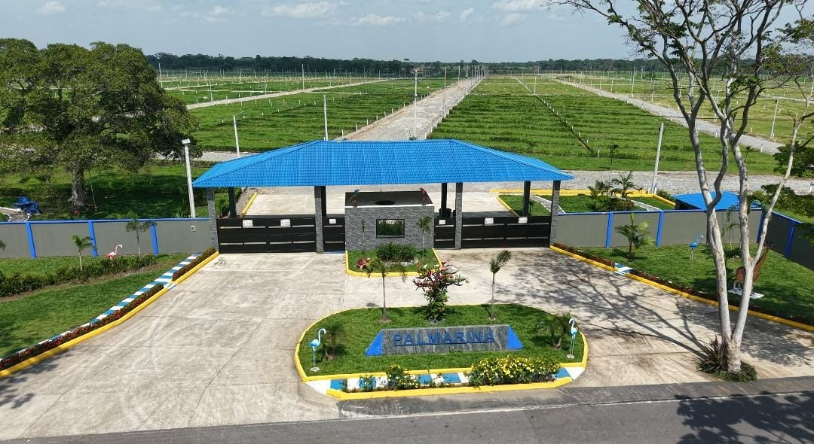

Los remates de casas en Acacías Meta se han convertido en la ruta favorita de los inversionistas que buscan precios por debajo del mercado. En esta guía descubrirás cómo identificar oportunidades, qué trámites legales considerar y cómo complementar tu estrategia con lotes al porcentaje en Acacías desde $14 millones.
1. ¿Qué es un remate y por qué hay descuentos?
Un remate judicial o bancario surge cuando el propietario incumple sus obligaciones crediticias y la entidad acreedora recupera la vivienda para subastarla. El descuento suele oscilar entre 25 % y 40 % sobre el avalúo catastral, de ahí que la venta de casas en Acacías Meta baratas sea una realidad para quienes conocen el proceso.
2. Pasos para participar en un remate de casas
- Consulta el Juzgado. Verifica fechas y requisitos de consignación.
- Realiza la consignación. Se exige el 40 % del valor base de subasta en título valor a nombre del juzgado.
- Asiste a la audiencia. Si eres el último postor y cumples requisitos, el juez adjudica la casa.
- Escritura y registro. Cancela saldo restante, impuestos y gastos notariales.
3. Comparativa de precios: remate vs mercado tradicional (2025)
| Tipo de inmueble | Valor mercado | Valor en remate |
|---|---|---|
| Casa 75 m² • 2 hab. | $150 M | $105 M |
| Casa 100 m² • 3 hab. | $210 M | $138 M |
| Casa 140 m² • 4 hab. | $320 M | $200 M |
4. ¿Y si en lugar de casa compras lote al porcentaje?
Los lotes al porcentaje en Acacías son ideales para quienes no cuentan con el 40 % inicial que exigen los remates. Puedes separar con $500 000 y pagar a 18 meses sin intereses. Con Ensueño Llanero administras tu presupuesto y construyes a tu ritmo.
✨ ¡Tu sueño de tener un lote propio en el paraíso ahora es una realidad! ✨
- 🏡 CONDOMINIO CAMPESTRE BONANZA – lotes de 9×22 m
- ✅ Servicios: agua, luz, vías vibrocompactadas, portería privada
- 🏕 Senderos, zona BBQ, balneario privado y mirador panorámico
- 💰 Desde $14 millones • Financiación 18 meses sin intereses

5. Preguntas frecuentes
¿Qué pasa si pierdo la subasta?
El juzgado devuelve tu consignación en máximo 15 días hábiles.
¿Aceptan permutas de casas baratas?
Sí. Evaluamos permutas de casas en Acacías Meta baratas como parte de pago para tu lote.
¿Puedo financiar un remate?
Algunas entidades permiten créditos de adjudicación, pero debes contar con mínimo el 40 % inicial en efectivo.
🚀 ¡Aprovecha los remates o construye desde cero!
Sea que quieras una casa lista para habitar o prefieras diseñar tu hogar en un lote campestre, en Ensueño Llanero te guiamos paso a paso.